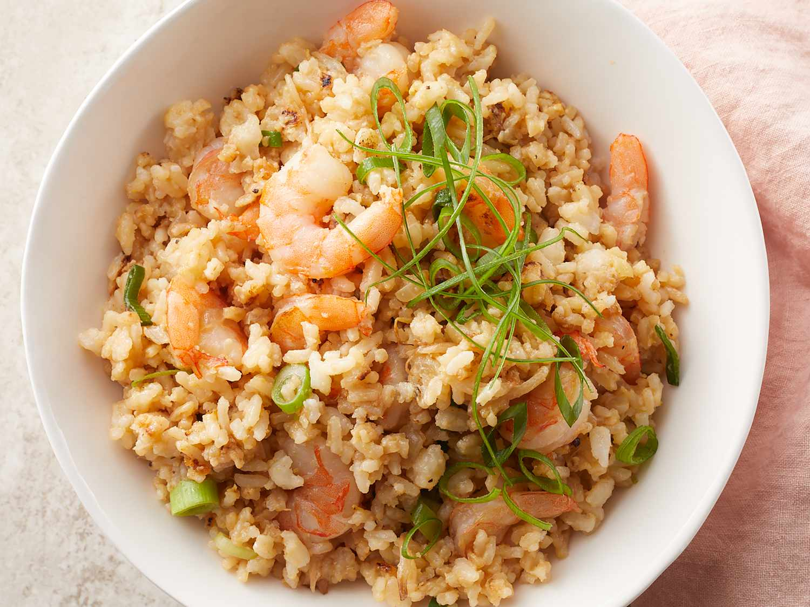

Shrimp Fried Rice

It's easy to make and great for a family dinner that tastes as good as takeout!
Shrimp Fried Rice is a savory and satisfying dish made with stir-fried rice, shrimp, vegetables,
and soy-based seasonings. It's quick, versatile, and a favorite in Asian cuisine.
Ingredients
- 3 cups water
- 1 ½ cups uncooked white rice
- 4 tablespoons vegetable oil
- 1 cup fresh bean sprouts
- ½ cup chopped onion
- 1 ½ cups cooked medium shrimp, peeled and deveined without tail
- 2 large eggs, beaten
- ¼ cup chopped green onion
- 4 tablespoons soy sauce
- 1 teaspoon salt
- ¼ teaspoon ground black pepper
- ¼ teaspoon sesame oil
Steps
- Gather all ingredients.
- Bring water to a boil in a saucepan. Add rice and stir. Reduce heat, cover, and simmer for 20 minutes. Set aside and allow rice to completely cool.
- Heat a large skillet or wok for 2 minutes. When the skillet or wok is hot, pour in vegetable oil, bean sprouts, and onions. Mix well and cook for 3 minutes.
- Mix in cooled rice and shrimp and cook for another 3 minutes. Stirring constantly.
- Add in eggs, green onion, soy sauce, salt, pepper, and sesame oil. Cook for another 4 minutes, stirring continuously, until eggs are cooked and everything is blended evenly.
Back to Recipes